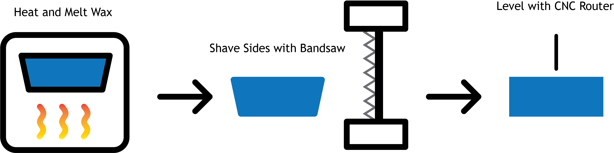

Week 8: Milling, Molding, and Casting
Outline:
This week, I used milling, molding, and casting in a variety of different activities!
CNC Milling:
With milling, I first got experience on the basement CNC router, as described in 3. Wax Recycling. Kassia trained me on the ShopBot where I milled a custom stork design, which I modified from an online .png using the spline tool in Illustrator. Both the design and the OSB cutout are shown below:

Using the ShopBot is not too complicated. First, nail down the material which will be cut using the nail gun with polymer nails. Then, load and prepare your .dxf file in Aspire. Turn the machine and spindle on, then test that your path is correct with an air cut (z zero set a few inches above the material). Finally, level the z to the top of the material and perform the cut. Make sure to clean up afterwards and you're set!
Molding and Casting:
For molding and casting, I decided to make a silicone mold of a 3D printed cuttlefish. The model was taken from this page and the setup for the model is shown below. I used popsicle sticks and hot glue to both suspend the cuttlefish into the mold area and prevent it from moving during the pouring/setting process.


I prepared the silicone mixture, then slowly poured it into the cup to minimize the amount of air bubbles. The popsicle stick poked out of the mold area, acting as a sprue to pour material in. I also added a vent using a plastic straw, which stuck out of the top and acted as an escape for air remaining inside the mold after casting material was poured in. After letting it set for about a day, I removed the mold from the cup, made an incision, and removed the cuttlefish model. After replacing the mold in the cup, I filled it with casting plaster. The plaster mixing was quick and dirty given time constraints, which yielded the following interesting cuttlefish:


The mold itself captured a great amount of resolution! The tentacles did not form properly, and some were broken off as I removed the cast from the mold. The posterior mantle region also did not form, which was due to the inconsistency of the plaster I poured into the mold. Without proper mixing, liquid will float to the top (as it did for the cuttlefish). If I continue making cuttlefish, I'll be more careful in the preparation of the plaster and let it set for longer.
Wax Recycling:
Blue wax blocks are used for milling to create patterns. These patterns are positives on which a silicone mold (negative) is created. That mold can then be filled with some material for casting, such as plaster, ice, or bismuth alloy, to create a copy of the original positive cut into the wax. However, this process leaves a lot of excess wax which is unusable for further milling. Nathan taught me and Dhruv the process of 'recycling' this excess wax into usable blocks, described in the diagram below.
Excess wax is collect and melted down in a cake pan. After it sets, the sides are cut so they are perfectly rectangular. For this operation, we use a bandsaw at the slowest speed, prevent wax from getting caught up in the band. Finally, to level the top and bottom surfaces and remove imperfections, we have a CNC router with a specialized leveling end mill take a pass across each side of the block. The sides of the block are cut with a bandsaw, while the top and bottom are smoothed with a CNC router. Finally, the large wax block is cut into smaller blocks using the bandsaw.
I was responsible for the final leveling process with the CNC router, as shown below. I came to really enjoy the sound of the leveling end mill.